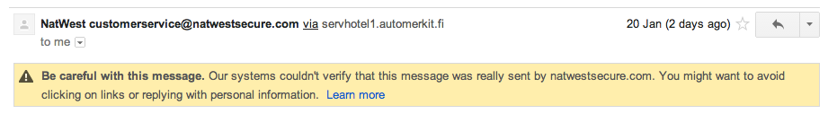

Amazon released a new feature for it’s Echo devices called “Alexa Guard”
To get Alexa Guard working in the UK I had to reset my Echo Dot and link it to a new account registered on amazon.com (instead of .co.uk). You can set your device location, language, time zone all back to UK with the new account and Alexa Guard continues to work.
Get Smart Alerts: Alexa can send you Smart Alerts, via phone notifications, if your Echo device detects the sound of smoke alarms, carbon monoxide alarms, or glass breaking. Play the detected sound from your Alexa app, or Drop In on your Echo remotely to investigate what’s happening.
To activate Alexa Guard you say “Alexa, I’m leaving” and to deactivate “Alexa, I’m home”, but who would remember to do this?
Home Assistant is open source home automation. I setup a simple, albiet silly automation.
iOS app detects I have left home
Triggers automation; Text-to-Speech (TTS) service runs and my Google Home says “Alexa, I’m leaving”
As of April 2019 Sky Broadband have started rolling out firmware (2.09.2510.R and newer) to all their routers to add support for the “Sky Broadband Boost” add-on.
Broadband Buddy — Customers can manage their family’s screen time in & out of their home via the Sky Buddy app (iOS and Android); even “pause the internet”. The app allows parents to monitor family online internet usage, including internet history. It also includes location tracking. Parents will be notified on their own device if children uninstall Sky Buddy.
Unfortunately this means they now proxy all your DNS traffic using a transparent DNS proxy, regardless of what DNS resolver you have set on your client.
I.e you may have Cloudflare’s 1.1.1.1 configured on your local device, DNS requests will still be answered by Sky. If you’re a Sky Broadband customer you can confirm this yourself here: https://www.dnsleaktest.com/
Is this a problem? It can be if you use “Smart DNS” services that allow you to watch streaming services only available in certain countries or if you simply don’t want your ISP logging which sites you visit.
DNS is unencrypted, this is why it can be so easily intercepted.
A number of well known public recursive DNS resolvers support encrypted DNS via DNS over TLS, DNS over HTTPS or DNSCrypt. Clients exist for Mac OS, iOS, Windows.
I like to use Cloudflare, they support both DNS over TLS and DNS over HTTPS.
If you already have a Raspberry Pi on your network you’re likely already utilizing Pi-hole for excellent ad blocking and DNS analytics, implementing encrypted DNS is easy, follow these instructions
If you have a router running OpenWRT setting up encrypted DNS is easy:
Here’s where things start to go off the rails: what this means is that all of the DPRK’s national network is non-routable IP space. You heard me; they’re treating their entire country like some small to medium business might treat their corporate office. The entire country of North Korea is sitting on one class A network (16,777,216 addresses). I was always under the impression they were just pretending that they owned large blocks of public IP space from a networking perspective, blocking everything and selectively turning on outbound traffic via access control lists. Apparently not!
I read Wired’s article on Friday, it gave a brief explanation of how the FBI located the real IP of Silk Road’s server. Nik Cubrilovic does a great job of analysing the tech behind it.
Dymocks Booksellers in Australia doesn’t use SSL while accepting credit card numbers. Both the page with the form and the POSTing location use HTTP. Any credit card numbers entered here would be insecure.
“I put some technology on a cat and let it roam around because the idea amused me” says Bransfield, who works for the security consultancy Tenacity. “But the result of this cat research was that there were a lot more open and WEP-encrypted hot spots out there than there should be in 2014.”
“Today is a good day. I just had a call from a telemarketer. Did I yell and scream at them, you ask? Certainly not. Like a good IT administrator I put my skills to use for their benefit. Here’s how the conversation went”
That BGP hijack allowed the hacker to redirect the miners’ computers to a malicious server controlled by the hijacker. From that server, the hacker sent the mining machines a “reconnect” command that changed the mining computers’ configuration to contribute their processing power to a pool that stockpiled the bitcoins they produced rather paying them out to the mining pool’s participants.
At its peak, according to the researchers’ measurements, the hacker’s scam was pocketing a flow of bitcoins and other digital currencies including dogecoin and worldcoin worth close to $9,000 a day.
Social attack against Subscriber Identity Module (SIM cards)
A number of attacks on high profile individuals that have made the news recently are of a social nature more so than a vulnerability in a certain software’s code. Mat Honan perhaps being one of the most well known cases.
Two factor authentication is being used by more as different services begin to support it, but it won’t make you entirely hack-proof. Matthew Prince, CEO of Cloudflare was the victim of an attack where by somebody socially engineered AT&T to redirect Matthew’s voicemail to a number the attacker owned at which point two factor authentication in the way he had it setup became useless.
SIM card replacement, a new kind of vulnerability
This leads me onto an attack method that I would like to share. If somebody were determined enough, it would be incredibly quick and easy to visit a network carrier’s store, present a fake ID and have them issue a new SIM card that replaces the old and immediately have access to your phone number. The important thing to note here is that they will hand you the physical SIM card replacement in the store near immediately disabling the original SIM card. The victim’s phone would lose signal but it could be days before they realise what has happened. I can’t imagine any of the other well known network carriers have more stringent security checks than asking for ID, in this case I was told a debit card with my name on it would have been enough.
How to protect yourself
In some cases you can setup two factor authentication in a way that it does not use your phone number to issue codes or account recovery, in these cases you should almost always use an app such as Authy. Authy will backup your two factor tokens in an encrypted manner too.
Google
We’ll use your phone to do things like challenge hijackers or to send you a text message to help you access your account if you forget your password.
On Google’s account recovery page we see the above text and the option to provide a phone number, don’t. On their 2-step Verification page you have the option of adding backup phone numbers for when you cannot access your primary way of receiving codes such as Authy, do not set a backup number.
Dropbox
Their settings page allows you to set a backup phone number in case you lose access to your two factor authentication device, don’t set this.
Tumblr
On your account settings page under Two Factor Authentication switch off SMS and switch on ‘Generate code via authenticator app’
These are just a few examples of how you can better protect yourself when using two factor authentication. Two factor authentication itself adds massive amounts of security to your accounts and in most instances using SMS or phone calls for code generation is secure enough however if you want to take it that one step further I would recommend relying on Authy or Yubikey + myotp.net
A new kind of tracking tool, canvas fingerprinting, is being used to follow visitors to thousands of top websites, from WhiteHouse.gov to YouPorn. Device fingerprints rely on the fact that every computer is slightly different: Each contains different fonts, different software, different clock settings and other distinctive features. Computers automatically broadcast some of their attributes when they connect to another computer over the Internet.
An interesting technology I did not know existed. Luis Abreu shows here that same fingerprint remains across normal and incognito browser modes. A brief explanation and example of the technology is found here.
Armed with knowledge of the encryption algorithm, key, initialization vector and an understanding of the mesh network protocol we could then inject packets into the mesh network, capture the WiFi details and decrypt the credentials, all without any prior authentication or alerting of our presence. Success!
Of the 32 council sites I tested until the vein in my head burst, a whopping 23 were found to be processing payments in breach of PCI, PECR and DPA regulations.
The majority of sites tested by Paul Moore scored F on Qualys SSL Server Test. Two of the sites tested had expired SSL certificates.
4 vulnerabilities discovered in September 2013 allowed one man to generate $620,496 USD in Dogecoin. If you haven’t already, reinstall your NAS device.
This post explains how to generate secret keys for use on devices you want to give encrypted read only access to your data. It’s a simple trick that I’ll outline below
Steps
Add a folder in BitTorrent sync and generate a secret, for example:
AL2NP4B5V46OLUQL3OOBQQRCK2WXTO26B
Before you hit OK change the first letter from A to D, the above would become:
DL2NP4B5V46OLUQL3OOBQQRCK2WXTO26B
That’s your read/write secret created, keep that safe from prying eyes. Now view the folder’s info (the part where you find your read only key) Take the first 33 characters from the read only secret and change the first letter from E to F. This is your encrypted read only secret.
Virgin Media, why are you manipulating my traffic?
Updates
6th April: TalkTalk appear to be doing something similar
7th April: Plusnet are doing it too. The responses to my post have hightlighted that using DNSCrypt + OpenDNS doesn’t allow you to opt out of this behaviour which suggests a deal between the ISPs, Google and OpenDNS has been made.
Virgin Media why does www.google.com resolve to host-62-253-8-99.not-set-yet.virginmedia.net? What a funny name for a PTR record, but seriously, why are you manipulating my traffic?
I was testing something only to find that google.com, google.co.uk both resolve to an IP address owned by Virgin Media.
PING google.com (62.253.3.103): 56 data bytes 64 bytes from 62.253.3.103: icmp_seq=0 ttl=58 time=17.569 ms
host 62.253.3.103 103.3.253.62.in-addr.arpa domain name pointer host-62-253-8-103.not-set-yet.virginmedia.net.
Performing a dig a google.com +trace fools me into thinking that ns1.google.com is dishing out these Virgin owned IPs, yet a query from elsewhere tells me otherwise.
Using Virgin Media
dig a google.com @ns1.google.com
;; ANSWER SECTION: google.com. 300 IN A 62.253.3.99
google.com. 300 IN A 62.253.3.93
google.com. 300 IN A 62.253.3.109
google.com. 300 IN A 62.253.3.103
google.com. 300 IN A 62.253.3.119
google.com. 300 IN A 62.253.3.94
google.com. 300 IN A 62.253.3.118
google.com. 300 IN A 62.253.3.108
google.com. 300 IN A 62.253.3.84
google.com. 300 IN A 62.253.3.88
google.com. 300 IN A 62.253.3.98
google.com. 300 IN A 62.253.3.123
google.com. 300 IN A 62.253.3.113
google.com. 300 IN A 62.253.3.114
google.com. 300 IN A 62.253.3.104
google.com. 300 IN A 62.253.3.89
Another ISP
dig a google.com @ns1.google.com
;; ANSWER SECTION: google.com. 300 IN A 74.125.136.113
google.com. 300 IN A 74.125.136.100
google.com. 300 IN A 74.125.136.102
google.com. 300 IN A 74.125.136.138
google.com. 300 IN A 74.125.136.101
google.com. 300 IN A 74.125.136.139
Most odd. Especially seeing as I do not use Virgin Media’s DNS resolvers, I use OpenDNS._m7.lon.opendns.com_ to be exact, according to www.dnsleaktest.com. OpenDNS’ cache check matches my other ISP, a whole bunch of IPs none of which are anywhere near this 62.253.3.0/24 we’re seeing from Virgin Media.
So for some reason Virgin Media someone is manipulating the DNS response I recieve from OpenDNS’ 208.67.222.222, 208.67.220.220 for google.com, google.co.uk and possibly other domains. They’re also proxying google.com to me as loading http://62.253.3.103 in a web browser shows me Google’s home page, creepy. Ok so where does a traceroute take me?
traceroute: Warning: google.com has multiple addresses; using 62.253.3.93 traceroute to google.com (62.253.3.93), 64 hops max, 52 byte packets
1 192.168.1.1 (192.168.1.1) 4.610 ms 4.257 ms 34.474 ms
2 cpc10-sotn8-2-0-gw.15-1.cable.virginm.net (81.101.98.1) 22.904 ms 79.800 ms 14.122 ms
3 sotn-core-2a-ae6-610.network.virginmedia.net (80.4.225.53) 13.692 ms 12.621 ms 11.575 ms
4 popl-bb-1c-ae14-0.network.virginmedia.net (62.253.175.30) 33.107 ms 16.609 ms 27.541 ms
5 brnt-bb-1c-et-000-0.network.virginmedia.net (62.253.175.238) 28.404 ms brnt-bb-1c-et-510-0.network.virginmedia.net (62.253.175.242) 15.146 ms 25.651 ms
6 haye-icdn-1-ae0-0.network.virginmedia.net (62.253.174.242) 14.849 ms 16.701 ms 16.381 ms
7 * * *
8 * * *
Most interesting that it stops here: haye-icdn-1-ae0-0.network.virginmedia.net (62.253.174.242)
haye-icdn-1, what do you do? A quick google (ironic) reveals this thread titled ‘Virgin hijacking’. One user suggests:
Content Distribution Network ran by Virgin to try and speed things up. It’s not really hijacking, per-se and if it worked, it would actually be a good thing. The problem is, it’s heavily congested so has the opposite effect.
….
I have no idea why Virgin and OpenDNS feel the need to proxy or CDN google.com for me. The ping response time to one of Google’s actual IPs is 20.049 ms. From now on I will encrypt my DNS traffic to OpenDNS using DNSCrypt and one of the suggested DNS providers, it takes 5 seconds to install their app.
Ahh, that’s better :-)
Some Notes
My Virgin SuperHub is in modem mode
It’s entirely possible Virgin Media has struck a deal with OpenDNS however I couldn’t find mention of that anywhere and it seems unlikely. The responses to this post have led me to believe some deal has been made.
In this article I explain how to enable IPv6 connectivity from any desktop in less than 5 minutes.
I was chatting with Dan Jenkins on Twitter. He asked when will Virgin Media roll out IPv6 support? I suggested an IPv6 over IPv4 tunnel but it may be tricky to setup. I did a quick Google but to my surprise didn’t find the slew of blog posts explaining how to set this up. I did however find Tunnel Broker.
Tunnel Broker
“Our free tunnel broker service enables you to reach the IPv6 Internet by tunneling over existing IPv4 connections from your IPv6 enabled host or router to one of our IPv6 routers. Try it now!”
Awesome.
It’s free
It’s from HE. (Hurricane Electric)
Your own /48 prefix once your tunnel is up
Ability to create your tunnel on geographically diverse tunnel-servers (Fremont, Ashburn, Chicago, Dallas, Denver, Kansas City, Los Angeles, Miami, New York, Seattle, Toronto, Amsterdam, Berlin, Frankfurt, London, Paris, Prague, Stockholm, Warsaw, Zurich, Hong Kong, Singapore, and Tokyo)
Step by step
First test to see if your ISP already supports IPv6. Nope? OK on to the next step.
Fill in your IPv4 Endpoint. It’s important to note that at this stage their system will attempt to ping the IP you supply. I enabled WANICMP response on my router until the form was submitted at which point I disabled it again.
Choose a Tunnel Server that is geographically closest to you. After completing these steps HE will assign you a /64.
On your ‘Tunnel Details’ page you’ll want to select the ‘Example Configurations’ tab.
There will typically be three commands you’ll have to run. One to create the 6in4 tunnel. One to assign your IPv6 address to that tunnel and one to statically route all IPv6 traffic over that tunnel.
There are examples for many routers and operating systems including Cisco IOS, JunOS, OpenWRT, pfSense, FreeBSD, Debian/Ubuntu, Mac OS X, and Windows etc.
When running any of the above commands, these are just three examples, you’re telling your device to route all IPv6 traffic via HE. Afterall, this is a tunnel!
IPv6 is a scary thing and I’d love to be more confident on the subject. This is something I am most definitely going to study for and I reccommend anyone in the industry to do the same.
The other day I was having a quick look through my Gmail spam folder and a particular email caught my eye. “Your NatWest CreditCard Online Statement is Ready Online”. Gmail warned me about the message. That they couldn’t verify it had been sent from natwestsecure.com and disabled all images and links. I was intruiged to know what would happen if I did click the link and also exactly where they were hosting this phishing site. Was it cheap shared hosting, or even a dedicated box?
I told Gmail the email was not spam, that allowed me to see both the images and the link.
Natwest Phishing email
Hovering my mouse over the link I could see it would in fact take me to
Hmm. Their own vanity nameservers plus the domain was registered in 1995. Certainly doesn’t look how I’d expect it to look. Ok, let’s check out the website itself.
Lodz, the former textile industry empire, today is a city of modern technologies, creative enterprises and grand events.
The website looks real, the official website of the city Lodz in Poland. How about``
Department of Information Science WiMBP in Lodz
That looks genuine too.
I notice the site is running off the CMS Joomla.
<meta name="generator" content="Joomla! 1.5
- Open Source Content Management" />
What’s the bet 1.5 isn’t the latest version? Nope. According to Joomla’s documentation 1.5 went EOL Sept 2012, all security updates for that version have stopped. I think it’s safe to assume that /cache/fr.php has been planted there by an attacker. What happens when we visit that site? A quick CURL reveals something interesting.
HTTP/1.1 302 Found
Date: Wed, 22 Jan 2014 20:28:00 GMT
Server: Apache
X-Powered-By PHP/5.3.1
Location: http://www.remart.com.ua/logs/index.html
Content-Type: text/html
A WHOIS on remart.com.au revleals a similar situation to lodz.pl. The domain was created in 2011 and the site itself appears genuine, a sort of high-end home repairs company. OK, let’s check the headers.
<meta name="generator" content="Joomla! 1.5
- Open Source Content Management" />
There’s a theme appearing here isn’t there? Let’s visit that site in a browser.
NatWest Phishing site
The source code reveals that nearly all of the site’s elements (CSS, JS) are being loaded from the natwest.com domain itself. The footer says Copyright 2005-2009, perhaps this is some old source code they stole? A quick visit to NatWest actual site shows that it potentially isn’t old as even their own website has Copyright 2005-2009 in the footer.
Interestingly at the bottom of the source code we see some javascript for Adobe’s analytics service SiteCatalyst.
<!-- SiteCatalyst code version: H.23.3.
Copyright 1996-2011 Adobe, Inc. All Rights Reserved
More info available at http://www.omniture.com -->
<sript language="JavaScript" type="text/javascript"><!--
var s_account="tssprodrbsgnatwestconsumer"
var linkInternalFiltersPage="javascript:" + window.location.hostname
+ ",testdomain.com"
//-->
The var s_account="tssprodrbsgnatwestconsumer" string matches what is on NatWest.com. The attackers obviously weren’t smart enough to strip this out. I’ve never used Adobe SiteCatalyst before but NatWest should be able to see this dodgy domain showing up in their statistics.
I’m now fairly certain the two sites involved in hosting the phishing site do not know they’re hosting it. How about the email, where did that originate from?
The Email
Return-Path:
Received: from servhotel1.automerkit.fi (servhotel1.automerkit.fi.
[80.69.163.62])
Received-SPF: pass
(google.com: best guess record for domain of
www-data@servhotel1.automerkit.fi
designates 80.69.163.62 as permitted sender)
That’s odd, the SPF passes. There’s even a PTR record on 80.69.163.62.
WHOIS again. Created: 2010. Desc: Interactive Auto Media Oy
automerkit.fi another genuine website? Yep! Looks to be a Finnish car enthusiast site.
What we’ve learnt
Whoever is sending these phishing emails has compromised three separate systems, I assume, to avoid being caught. They’ve compromised somebody’s email system with working SPF and PTR record to try and make their way into your inbox. Fortunately their efforts have failed, at least they do if you use Gmail & Google Chrome.
Gmail knew the email was dodgy and sent it straight to Spam:
Gmail phishing detection
Google Chrome knew that both links were dodgy:
Google Chrome phishing detection
Morale of the story. If you’re a web developer, don’t leave your site running on old versions of any CMS. Be that Joomla, Wordpress. If you’re really serious about security or don’t have the time to keep it patched, publish your site as static files, if possible. Lock down access to your servers using secure passwords, two factor authentication and ideally access lists too. Follow some simple steps to locking down that SMTP server too.
Because I’m a good citizen I forwarded the phishing email to phishing@natwest.com and notified the website owners of the two pages. I also emailed the owner of automerkit.fi to let them know their servers were spamming.
I recently migrated my blog from Wordpress to Silvrback to Ghost. I was very happy with Silvrback, it’s an excellent writing platform. In the end I got fed up not being able to change how my site looked (no theming), so switched to Ghost.
I’m a bit of an uptime and performance freak. This website is relatively lightweight and performs well in most situations. I wanted to ensure it performed the best it ever could and sustained 100% uptime. Ghost isn’t difficult to setup on your own server but there are so many advantages to hosting a static site vs one that is dynamically generated server side with a database backend. Nor did I want to pay for a hosted solution once I discovered you can host your static site for free using GitHub Pages.
Static Ghost
Enter Buster. Buster is a static site generator for Ghost. There are many reasons you might want a static site
Host it anywhere
No database dependancy
Better performance
Easy to backup
Far more secure, no admin backend
Getting Buster setup was easy and in 10 minutes I had a static copy of my then hosted Ghost blog. You can actually target any Ghost blog hosted on any server with Buster, it’s quite powerful.
GitHub Pages
Before you buster deploy you’ll want to setup a GitHub account (free) if you don’t already have one and then configure a GitHub Pages respository (also free) as per instructions here. Make sure you follow the guide on configuring a custom domain before you make and DNS changes.
My Workflow
I have a locally hosted copy of Ghost running on my Macbook and I target this using Buster. Getting Ghost up and running locally is very simple. The great thing about having a local install of Ghost is that I can publish posts before I’m finished, make styling changes etc and preview what they look like on the site before statically generating the updated version and pushing that to GitHub. I store my Ghost installation in my Dropbox along with the static files.
GitHub sits behind the Fastly CDN. You may not of heard of Fastly but they CDN for the likes of Twitter, Disqus, The Guardian, Shazam. Converting your site to static files and hosting with GitHub Pages will guarentee to improve performance. My site’s load time before I moved was 1.6s. My site now loads in just over 330ms.
If you don’t feel comfortable hosting your website for free then I’d highly recommend reading Paul’s“How To: Hosting on Amazon S3 with CloudFront”. Paul’s site is built using Jekyll 1, as are most blogs hosted on GitHub Pages, but you can follow pretty much everything he does to get your Buster generated static blog online.
I say massive, it’s not actually that big. It does make for a good title though. I’d like to share some of the methods I use to organise my photo collection. Most of the stuff I do is a result of reading somebody’s blog and then implementing in my own way. Organizing my photo collection has been incredibly liberating these past few days. I set out to de-duplicate, sort my photos into some sort of folder structure, shrink their file size down somewhat without affecting the quality of the images and then finally automate this for the future. This article assumes you are using a Mac as most of the software featured here isn’t available on Windows. I also recommend anyone who has a keen interest in this subject to follow Bradley Chambers on Twitter, he shares this passion and invests more time in it than I do.
Like many, this blog post would probably not exist had Everpix not shutdown. Pre-Everpix I had photos stored everywhere, mostly dumped into random folders synced to Dropbox. I would often restore iOS betas to my iPhone, dumping my photos out to randomly named folders before doing so. My dad had 20,000 something photos on his iMac in iPhoto dating back to 2006 which I synced to my Everpix account and then backed up using CrashPlan. Everpix - the be all and end all of photo management software in the cloud. Install the desktop uploader, iOS app - tell it to upload everything - be ignorant to the complete mess behind the scenes. Everpix hid this, allowed you to view your photos with no duplicates, no folder structure, just pure photos. Boy was Everpix a good product. A massive time saver, not fully realised by myself until now.
Exporting Your iPhoto Library
Sven Fechner wrote up an excellent blog post that details how to correctly export your iPhoto library and then sort those photos into a date based folder structure. At first I followed Sven’s method, it involves using Phoshare to export your photos instead of File>Export in iPhoto. The reason behind this is that iPhoto will set Date modified and Date created on all the files it exports to today’s date, this hampers the automated sorting process later on. I have since discovered DIM - Digital Image Mover that can sort photos based on Exif data rather than the Date created / Date modified time stamps.
Sorting your photos into folders
Once you have an export of all your images, or if you do not use iPhoto you may already have all your photos dumped into folders, you’ll want to organise them into subfolders based on Year, Month and depending on the number of photos you have maybe even days. When I first experimented with this I used Hazel to organise my photos into subfolders, as described by Sven. Due to limitations in OS X Spotlight Hazel can only organise photos based on the file’s ‘Date Created’ or ‘Date Modified’ and not Exif data from the image itself such as ‘Date Time Digitized’ and ‘Date Time Original’. Really if you’re going to organise your photos accurately you’ll want to use Exif data as this remain unchanged since your camera first recorded the image, unlike ‘Date Created’ and ‘Date Modified’. For this I used DIM: Digital Image Mover 5.0 Beta.
DIM
I only stumbled across DIM the other day. It looks to of been created in 2001, the latest beta version released Dec 2013 still has a UI from 2001 but that really doesn’t matter. The tasks the software is designed to do it does very well. It sorted my 27,000+ photos into subfolders in less than 5 minutes. The software is very self-explanatory, it will copy your photos by default rather than altering the originals. To speed things up a bit I switched off the Geolocation functionality. This allows you to sort your photos based on Location. You can see which DIM settings I switched on and off here and here.
De-duplicating
If like me you have a ton of duplicate photos there are two pieces of software that can help with that.
MacPaw Gemini is an awesome piece of software, you can use it to de-duplicate any file not just photos. Gemini scanned through my 60GB photo collection in less than 1 minute showing me all the duplicates. The software itself is pretty self explanatory and doesn’t require any guidance. Gemini will detect duplicates based on the file itself rather than the image content i.e those that are exactly the same size and share the same MD5 hash. It won’t detect two of the same photo if one has been resized or compressed. For this you need PhotoSweeper.
Gemini
PhotoSweeper is an excellent piece of software that has helped me to remove all my what I call ‘WhatsApp duplicates’. These are low-resolution copies of photos that WhatsApp creates and end up in recipients Camera Roll when you send somebody a photo i.e your partner that syncs their photos to the same Dropbox account as you. PhotoSweeper isn’t as 100% accurate as Gemini. It’s detection methods are based on the image content itself however I found it more than accurate enough to rid my collection of nearly all duplicates.
Saving space
When I first started sorting through my photo collection I told myself I wouldn’t compress or shrink any of my photos. After researching the process behind compressing a JPEG photo I changed my mind. Although I do not fully understand the science behind losslessly compressing a JPEG image I do trust it and the results are amazing. At no point have I shrunk the resolution of any of my photos, only re-organised the ‘huffman tables’ to shrink the size of the file itself. The software I am using is jpegoptim, available as a command line tool for Mac OS X and GUI here. I will show you how to implement an automated workflow using the command line tool.
Lossless compression (100% quality) produced significant savings in photos where colors are similar across the whole image. I started to experiment with lower quality settings. At 80% I was hitting near 60% space savings on every image I ran through jpegoptim with no visual loss of image quality. I ran a handful of completely different photos from different devices through jpegoptim with a maximum quality of 80%, zoomed in to 100% and could spot no differences to the original. My whole photo collection now comes in at 25.29 GB where as before running this process it was just over 55 GB, that’s just under a 50% reduction in size with no visible loss in photo quality.
Automating this - My Workflow
As I only shoot using my iPhone my workflow is perhaps more simple than most. I use Dropbox to automatically sync my photos and then have a very simple set of Hazel rules that compress, tag and sort my photos from there. Dropbox’s camera upload app is very well made, files are dropped into a ‘Camera Uploads’ folder renamed with the date the photo was taken, extracted from Exif, it also sets the ‘Date Created’ as per Exif.
Rule 1
Rule Name: Compress, tag, move to photos folder
Target: Dropbox/Camera Uploads
Conditions: Extension is jpg
Actions: Run shell script- embedded script:
jpegoptim -m80 -p "$1"
Add tags: jpegoptim80
Move: to folder: Dropbox/Photos
The embedded script broken down. jpegoptim calls the executable, -m80 sets quality to 80%, -p “$1”tells jpegoptim to process the file that Hazel has detected in Dropbox/Camera Uploads.
Hazel Rule
Rule 2
Rule Name: once moved to photos, sort into subfolders
Target: Dropbox/Photos
Conditions: Extension is jpg
Actions: Sort into subfolders: date created (2013) ▸ date created (12 - Dec) ▸ date created (01)
Hazel Rule
This sorts the photos into a dated folder structure moved to Dropbox/Photos by Rule #1. Here we can use Hazel because Dropbox has set the Date Created / Date Modified attributes on the file as per Exif.
What about Video?
I’m yet to work out how I can de-duplicate, compress and accurately sort my videos. Nearly 70% of my Dropbox is consumed by video and I’d love to do get that number down. If anybody has a similar workflow for video I’d love to here it.


{kind=link}
{kind=link}
{kind=link}